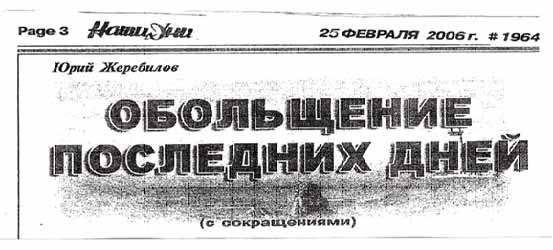

| Обольщение последних дней |
| Эту статью мне рекомендовал прочитать и поставить на сайт брат Иван Васильевич М. Где-то давно я читал уже подобное. Небольшое воспоминание: Прекрасным летним утром пришел я в церковь (было это на Украине) и первым словом, которым меня встретил пастор: "На кого это вы рукава засучили?". Я сначала не понял, а потом увидел, что я у своей рубашки с длинными рукавами рукава закатал, по причине теплого утра. Это был один из первых дней нашего пеезда в Стаханов и почти первое посещение церкви. Прошло несколько лет и все изменилось: требования к одежде ушли в прошлое. Итак, я помещаю статью, как она есть, а потом повторяю ее, но уже со своими комментариями и сейчас прошу Господа дать мудрости и благословить эти комментарии. Назар Вятский 17 марта 2006г. |
|  |
'' Удали от Меня шум песен твоих, |
| Иисус сказал самарянке: ''Бог есть дух, и поклоняющиеся Ему должны поклоняться в духе и
истине'' (Иоанн. 4:24). Очень важно понять это, потому что поклонение иным образом - самообман!
Люди могут искренне заблуждаться и думать, что они правильно поклоняются и славят Бога. Но все то, что не освящено Словом Божьим, есть уклонение от истины. Люди не могут приблизиться к Богу посредством человеческих эмоций, возбужденных чем-либо: музыкой, шумными выкриками, овациями, танцами или скаканием. Все это не есть небесное, а поднебесное, языческое! Многие, отошедшие от правильной духовной жизни, особенно молодое поколение христиан, желают выразить свою веру чем-то особенным, неизвестным прежним христианам, которые служили Богу детским искренним сердцем и детскою верою. И Бог был с ними, как со Своими детьми. Но наши современники, утеряв ту детскую простоту и доверие к Небесному Отцу, не понимая уже, ЧТО есть духовное служение, решили, что старое примитивно и неэффективно для служения. Они избрали себе другой путь, другой метод и другие формы выражения славы Богу. Возбуждающая, эмоциональная форма служения сразу, без труда дает эффект приближения к сфере ''духа''. Это происходит быстро, но эти методы не евангельского происхождения, а по своим свойствам, естественно, и не небесного происхождения. И это никак не духовные методы, а плотские, искусственные. Если псалмы наших отцов и дедов, выстраданные в горниле испытаний, своим содержанием вызывают сокрушение духа и слезы, являясь абсолютно духовными, то современное общество христиан отбросило их как старомодные. Современные ''песнопения'' вроде бы и имеют религиозное содержание, но, по сути, являются эстрадными песнями этого мира с элементами плясовой музыки. Где их ''выпекают''? А там же - в поднебесье! Когда поют о страданиях Христа, повторяя один куплет 5 - 6 раз под аккомпанемент плясовой музыки, то это не что иное, как насмешка над Господом. |
| ''Если вознесете Мне всесожжение и хлебное приношение, Я не приму их и не призрю на благодарственную жертву из тучных тельцов ваших. Удали от Меня шум песней твоих, ибо звуков гуслей твоих Я не буду слушать'' (Амос. 5:22-23). |
| Замечаете: нет ничего нового под солнцем. Дьявол опять вытаскивает из своего
арсенала оружие и чистит его для нового поколения Лаодикийского периода. И это уже не.веяние
Святого Духа, а веяние религиозной моды.
Сейчас время приготовления к приходу Господа, время очищения и освящения, а мы видим веселые пляски, хлопанье и танцы в доме молитвы, модные одеяния, блеск золотых украшений и демонстрацию обнаженных тел. Это и есть современный дух служения! Только какому богу?.. Я вам скажу, откуда это явление взялось и распространилось по всему миру. |
| Однажды князь тьмы собрал всех своих подданных духов злобы поднебесных у врат ада и сказал:
- Слушайте, силы, власти и начальства всей поднебесной сферы! Поднимается на арену мира новое поколение христиан. А времени остается мало, как вы уже слышали… Смерть не помогает, лесть, богатство, слава тоже не много принесли успеха. Давайте, думайте! ЧТО изобрести более эффективное, чтобы увести христиан от Бога, и сделать это так незаметно для них, чтобы они думали, что они продолжают служить Богу, а сами служили бы нам? Я жду! Духи один за другим стали выступать с предложениями и разными новинками, но сатана повторял тихо: ''Это уже было, это уже испытывали. Не то…'' - Я имею, мой господин, прекрасную идею как увести молодое поколение от Господа, и сделать его нашим союзником! - произнес с сардонической улыбкой один из духов. - Говори, - ответил князь тьмы. И среди полной тишины прозвучало: - Я буду прославлять Христа. Все словно онемели, и вдруг кто-то злобно завопил: - Предатель! Он хочет славить нашего врага! Что тут началось! Жутко было смотреть на эту картину! Злобные крики неслись со всех сторон: - Уничтожить предателя! Придумал! - Нет ему места в совете ада! Но дух спокойно стоял и улыбался, чуть приплясывая на месте. Князь тьмы грозно глянул на духа и вдруг … тоже улыбнулся жуткой улыбкой убийцы. Он все понял своим проницательным дьявольским умом. Подняв руку, он остановил шум и сказал: - Обьясни! Я вижу, ты действительно имеешь новую идею. Дух торжественно произнес среди установившейся тишины: - Господин мой, это новое - просто забытое старое, хотя оно будет преподнесено мною в современной упаковке. Пусть поют эти молодые люди про Иисуса, только музыка будет наша и метод прославления будет наш! Так как духи были опытны в своих нечистых делах, то им не надо было долго обьяснять. Князь тьмы еще раз улыбнулся своей жуткой улыбкой и с удовлетворением произнес: - Ты преуспеешь в этом ''прославлении''. Возьми в помощь себе кого пожелаешь; все - твоем распоряжении. И я буду с тобой. Как победоносный вышел дух ''прославления''. Все духи хлопали в ладоши вслед уходящему, приплясывая от радости… |
| Картина эта прошла предо мной. В страхе и трепете я произнес: ''О! Погибнет народ! Где же
взять силы, чтобы устоять против такой армии злых духов?!'' И вдруг я услышал тихий голос:
''Врата ада не одолеют Церковь Мою. И хотя многие последуют тем путем, овцы Мои знают голос Мой и за другим не пойдут. Все в Моей власти и под Моим контролем!...'' Поэтому не удивляйтесь тому, что происходит в наше время, а молитесь горячо о себе и детях своих. Сейчас, как никогда раньше, двери всех церквей открыты для распространителей всевозможных идей, учений, новаций, которые своим красноречием обольщают сердца, не давая людям времени поразмыслить, о чем они говорят и ЧТО утверждают. Они обращают благодать Божью в средство обогащения, превращают служение Богу в бизнес, став профессионалами ''церковной эстрады'', срываю славу, аплодисменты. И что удивительно - христиане действительно хлопают в ладоши, как в театре! Идет конкуренция за церкви, за души, за обогащение. Дух Валаама пронизал сверху донизу ''духовную'' жизнь многих церквей! Многие ''пастыри'' (уже не пресвитера!) увлечены этим пороком, особо делая акцент на молодое поколение. Настало тяжкое время, братья и сестры! Дух Святой через апостола Павла определил это время как тяжкое (2 Тим. 3:1). Уже в то время Дух Святой ясно говорил, что в последние времена будет отступление от веры, от истинного поклонения Богу, будут внимать ''духам-обольсттелям и учениям бесовским, чрез лицемерие лжесловесников, сожженных в совести своей'' (1 Тим. 4:1-2). Эти лжесловесники врываются в церкви, бегают с микрофонами по сцене, так как кафедра для них мала и уже не удовлетворяет. Воздействуя психологически на умы, опустошая разум слушающих, выкрикивая время от времени: ''Аллилуйя! Аминь! Слава Богу!'', постепенно ''заводят'' они людей, приводя их в возбуждение! Многие совершенно теряют контроль над собой. Бесконтрольно выплескиваются наружу чувства человека, которые воспринимаются за духовные проявления. Те, кто никогда не переживал настоящего проявления силы Духа Святого, как могут различить, что от Бога, а что от чувств человеческих? Это тонкая духовная грань, и различается она только духовными и опытными христианами. Когда проявляется действие Духа Святого, тогда не нужно криков с кафедры, бурных действий, а нужно лишь одно - ПОМАЗАНИЕ ДУХА СВЯТОГО, тихое веяние Его. И человек очень глубоко и долго переживает эти действия Божьи, и они навсегда остаются у него в памяти. Мне особенно жаль молодое поколение искренних, ищущих христиан. Я говорю не о новом поколении (поколение, которое утверждено в лжеучении о процветании на земле), а о тех, кто искренне жаждет хоть капельки благодати, проявления силы Господней. Под впечатлением эмоций они могут искренне плакать и выходить для покаяния. Но через несколько дней те же искушения и соблазны возвращают их на прежний путь. И вот они мучаются: ''Как же так? Ведь за нас молился такой великий ''проповедник'', ''евангелист'', даже руки возлагал, а мы остаемся такими же, как и были … видимо, нет спасения для нас … Бог не слышит нас …'' Однако у Бога всегда есть остаток, через который Он продолжает совершать Свой изумительный план спасения человечества. Труд во спасение грешников весьма кропотлив и разнообразен: это и беседы по душам, и молитвы с постом и т.д. И всем должен руководить Господь; необходима сила Его Духа Святого. Истинный евангелист, проведя служение, правильно наставит пресвитеров и дьяконов, как дальше опекать и утверждать в вере покаявшихся, не бросая их ''на произвол судьбы''. Люди, будьте бдительны! Служители, бодрствуйте! Охраняйте овец! Бог взыщет с вас за них. Братья и сестры! Больше вникайте в то, что писали апостолы о последних днях, о лжепастырях, о лжебратьях. Не позволяйте увлечь себя с пути поклонения Богу в духе и истине. Даже если вы сохраните лишь немного силы и не отречетесь от истинного Бога, то Он сохранит вас от искушения, грядущего на всю вселенную. Ибо Бог испытает Свою Невесту на чистоту, на преданность и на верность Ему. Силы тьмы уже вышли на поля сражения. Готовы ли вы встретиться с ними во всеоружии Божьем? Времени уже так мало осталось. И все, кто разумеет, что Церковь пройдет Голгофу, как и наш Господь, стремитесь очиститься, освятиться, чтобы Он сохранил вас в годину искушения, дал силы устоять при испытании. |
'' Удали от Меня шум песен твоих, |
| Увы! Эпиграф выбран совершенно неудачно. Прочтем же вместе: |
|
Амос 5: 1 Слушайте это слово, в котором я подниму плач о вас, дом Израилев. ... 11 Итак за то, что вы попираете бедного и берете от него подарки хлебом, вы построите домы из тесаных камней, но жить не будете в них; разведете прекрасные виноградники, а вино из них не будете пить. 12 Ибо Я знаю, как многочисленны преступления ваши и как тяжки грехи ваши: вы враги правого, берете взятки и извращаете в суде дела бедных. 13 Поэтому разумный безмолвствует в это время, ибо злое это время. 14 Ищите добра, а не зла, чтобы вам остаться в живых, - и тогда Господь Бог Саваоф будет с вами, как вы говорите. 15 Возненавидьте зло и возлюбите добро, и восстановите у ворот правосудие; может быть, Господь Бог Саваоф помилует остаток Иосифов. 16 Посему так говорит Господь Бог Саваоф, Вседержитель: на всех улицах будет плач, и на всех дорогах будут восклицать: "увы, увы!", и призовут земледельца сетовать и искусных в плачевных песнях - плакать, 17 и во всех виноградниках будет плач, ибо Я пройду среди тебя, говорит Господь. ... 21 Ненавижу, отвергаю праздники ваши и не обоняю жертв во время торжественных собраний ваших. 22 Если вознесете Мне всесожжение и хлебное приношение, Я не приму их и не призрю на благодарственную жертву из тучных тельцов ваших. 23 Удали от Меня шум песней твоих, ибо звуков гуслей твоих Я не буду слушать. 24 Пусть, как вода, течет суд, и правда - как сильный поток! 25 Приносили ли вы Мне жертвы и хлебные дары в пустыне в течение сорока лет, дом Израилев? 26 Вы носили скинию Молохову и звезду бога вашего Ремфана, изображения, которые вы сделали для себя. |
| Совершенно произвольно из текста вырвана фраза. На самом деле Господь
говорит, что после долгих лет идолопоклонства, видимое поклонение Богу является лицемерным по
существу, поэтому такое поклонение Господь не принимает, ибо нет покаяния и: "12.
Ибо Я знаю, как многочисленны преступления ваши и как тяжки грехи ваши: вы враги правого,
берете взятки и извращаете в суде дела бедных. " Какое же это отношение имеет к тем, кто искренне покаялся и славит Господа всей душой своей?! |
| Иисус сказал самарянке: ''Бог есть дух, и поклоняющиеся Ему должны поклоняться в духе и истине'' (Иоанн. 4:24). Очень важно понять это, потому что поклонение иным образом - самообман! |
| Нечего возразить на слова: должны поклоняться в духе и истине,
разве скажет кто по другому? Но важно знать, что понимание "истины" для каждого поколения отличается, хотя истина одна, но люди несовершенны и имеют право на разное понимание! Сейчас я приведу параллельные места данные в нашем каноническом переводе Библии: |
| 2-е Коринфянам 3: 17 Господь есть Дух; а где Дух Господень, там свобода. К Филиппийцам 3: 3 потому что обрезание - мы, служащие Богу духом и хвалящиеся Христом Иисусом, и не на плоть надеющиеся, |
| Более полно текст из Иоанна: |
| От Иоанна 4: 19 Женщина говорит Ему: Господи! вижу, что Ты пророк. 20 Отцы наши поклонялись на этой горе, а вы говорите, что место, где должно поклоняться, находится в Иерусалиме. 21 Иисус говорит ей: поверь Мне, что наступает время, когда и не на горе сей, и не в Иерусалиме будете поклоняться Отцу. 22 Вы не знаете, чему кланяетесь, а мы знаем, чему кланяемся, ибо спасение от Иудеев. 23 Но настанет время и настало уже, когда истинные поклонники будут поклоняться Отцу в духе и истине, ибо таких поклонников Отец ищет Себе. 24 Бог есть дух, и поклоняющиеся Ему должны поклоняться в духе и истине. |
| Женщина спрашивает Иисуса о месте поклонения, а Иисус отвечает ей о форме и содержании
поклонения. Через Павла Господь говорит о свободе поклонения и о хвале Иисусом. Вряд ли Иисус ждет от нас хвалы с серьезными или, еще хуже, мрачными лицами. |
|
Люди могут искренне заблуждаться и думать, что они правильно поклоняются и славят Бога. Но все то, что не освящено Словом Божьим, есть уклонение от истины. Люди не могут приблизиться к Богу посредством человеческих эмоций, возбужденных чем-либо: музыкой, шумными выкриками, овациями, танцами или скаканием. Все это не есть небесное, а поднебесное, языческое! |
| "Правильно поклоняться" - хорошо знакомая регламентация в православии или
католицизме, но где-же там свобода выражения моего чувства к Богу моему, моего восторга Отцом
моим! Человеческие эмоции не приближают к Господу, но могут быть индикатором моего к Нему движения! Моя младшая дочь, когда видит меня даже после краткого отсутствия, кидается мне на шею, обнимает и целует, прыгает и смеется! Каждому родителю это знакомо и приятно. Если же ребенок не подходит или насупился, то мы в беспокойстве: что случилось! |
|
Многие, отошедшие от правильной духовной жизни, особенно молодое поколение христиан, желают выразить свою веру чем-то особенным, неизвестным прежним христианам, которые служили Богу детским искренним сердцем и детскою верою. И Бог был с ними, как со Своими детьми. Но наши современники, утеряв ту детскую простоту и доверие к Небесному Отцу, не понимая уже, ЧТО есть духовное служение, решили, что старое примитивно и неэффективно для служения. Они избрали себе другой путь, другой метод и другие формы выражения славы Богу. Возбуждающая, эмоциональная форма служения сразу, без труда дает эффект приближения к сфере ''духа''. Это происходит быстро, но эти методы не евангельского происхождения, а по своим свойствам, естественно, и не небесного происхождения. И это никак не духовные методы, а плотские, искусственные. Если псалмы наших отцов и дедов, выстраданные в горниле испытаний, своим содержанием вызывают сокрушение духа и слезы, являясь абсолютно духовными, то современное общество христиан отбросило их как старомодные. Современные ''песнопения'' вроде бы и имеют религиозное содержание, но, по сути, являются эстрадными песнями этого мира с элементами плясовой музыки. Где их ''выпекают''? А там же - в поднебесье! Когда поют о страданиях Христа, повторяя один куплет 5 - 6 раз под аккомпанемент плясовой музыки, то это не что иное, как насмешка над Господом. |
| Как хорошо мы помним наше первое вхождение в церковь? Многие из тех, кто сегодня с удивлением смотрит на поведение молодежи в церкви, помнят почтительно тихую церковь времен Советского Союза. Немногочисленные тогда церкви находились под гнетом атеистической власти и любое проявление активности в церкви преследовалось. Было время, когда не разрешалось детям ходить в церковь и родители приводили их тайком. Песни были тихие и спокойные, а содержание отражало отверженное, угнетенное состояние христиан в государственной системе. Во времена гонений какие могли быть торжества? А они были! Это были торжества духа, но без видимых внешних проявлений. Это и предлагается сейчас новым церквям!? Разрушены заборы и открыты двери, а некоторые христиане все еще остаются там куда их затолкала богопротивная власть. Привычка сидеть тихо - сильна, но молодежь не желает этого и, действительно, ищет новые пути проявления служения Господу. Да, есть стремление громко кричать: - Люди, я со Христом и спасен и жизнь моя радостна! Можем ли мы осуждать за это, когда сами уже в силу привычек своих тихо шепчем о спасении? Никак! |
| ''Если вознесете Мне всесожжение и хлебное приношение, Я не приму их и не призрю на благодарственную жертву из тучных тельцов ваших. Удали от Меня шум песней твоих, ибо звуков гуслей твоих Я не буду слушать'' (Амос. 5:22-23). |
| Мы уже разбирали применимость этих слов Господа к современной церкви. И я еще раз задаю вопрос: разве те кто сейчас славят Господа "неправильно" берут взятки и грабят вдов? Разве есть у Господа основания сомневаться в искренности молодых христиан, чтобы применить к ним слова из (Амос. 5:22-23)? Подойдите и поговорите с поющими "громко" и вы увидите у них веру в Отца любящего и прощающего. |
| Замечаете: нет ничего нового под солнцем. Дьявол опять вытаскивает из своего
арсенала оружие и чистит его для нового поколения Лаодикийского периода. И это уже не.веяние
Святого Духа, а веяние религиозной моды.
Сейчас время приготовления к приходу Господа, время очищения и освящения, а мы видим веселые пляски, хлопанье и танцы в доме молитвы, модные одеяния, блеск золотых украшений и демонстрацию обнаженных тел. Это и есть современный дух служения! Только какому богу?.. Я вам скажу, откуда это явление взялось и распространилось по всему миру. |
| Убойной силы аргументы! Однако, попробуем разобрать их по отдельности, чтобы очистить семена от плевел. "Веселые пляски" - автор видимо имел ввиду подвижность тела в такт музыке или стиху, потому что далее есть еще слово "танцы". Действительно, все чаще мы видим на служениях не неподвижно стоящие истуканы, а движущиеся под музыку тела, они стоят на месте, но вместе с тем и двигаются, как бы плывут в музыке. Явление это хорошо известно среди музыкантов, людей сделавших музыку своей профессией. Плохого в этом не вижу, а вижу способность человека сопереживать и понимать музыку. "Хлопанье" - два вида: солист или ансамбль исполняет песню и зал в конце выражает свою благодарность и хлопание в такт песне, как бы удержание ее ритма. Итак, благодарность выражается, когда присутствующие слушают что-то новое, что они ранее не слышали и есть заслуга в этом исполнителей, т.е. это чисто мирское, свойственное всем и вреда служению Господу не наносящее, но поощряющее исполнителей. Хлопание в ритм - главное в наличии ритма в песне. Я помню христианские песни протяжные и мелодичные, когда один мотив плавно переходил во другой. Там тоже был ритм, но он был смазан по песне. Сейчас в мире господство ритма четкого и даже резкого, ритма контрастов, ритма резких настроений. Ритм используется, как разделитель слов и музыки и указатель темпа исполнения. Можем ли мы говорить, что раньше этого не было в церковных песнопениях? В обозримый нами период (время нашей жизни и наших родителей, может быть дедов) этого не было, но если мы перенесемся на столетия назад, то увидим ударные инструменты задающие ритм песнопениям. Некоторые видят в ритме пришельца с Африки. Это неверно и верно, потому что Африка развивалась крайне медленно и ритм в ней сохранился еще со времен Давида, потому это просто наше прошлое. Следует ли нам его отвергнуть? Вопрос риторический, ибо ритм господствует в музыке. Принимаем, но не подчиняемся ему, т.е. это метод, которые используется при надобности, в прочих случаях ложится на полку ожидания. "Танцы" - нам известны еврейские танцы, идущие из тысячалетней истории. Они исполнялись во славу Господа! Можем ли мы их отвергнуть? Некоторые спрашивают: мы люди Нового Завета или Ветхого? Танцевал ли Иисус? Мы безусловно люди Нового Завета и большинство указаний о стиле жизни из Ветхого Завета к нам не применимо, ибо сейчас другое время и другие условия жизни и никто не несет ответственности за "своего раба". До определенного возраста Иисус жил, как все евреи из его окружения. Если во время посещения храма требовалось исполнять танцы, то скорее всего Иисус, как послушный своим земным родителям и священству, это делал, ибо нигде в Библии нет описаний конфликтов на этой почве, на почве неповиновения. Во время Своего служения, как Бога, Иисусу не было надобности танцевать, потому что все время Его было занято другим - учением того, что было ново для людей и не привычно. Иисус готовил почву для следующего шага в возрастании Божьего Стада. Можем ли мы обойтись без "танцев"? Да! Обязательное ли это условие нашего роста во Христе? Исходя из вышеизложенного - нет. Если, кто умеет и желает, пусть танцует во славу Господа и это может быть балет или народные танцы. "Модные одеяния" - конечно одежда должна быть скромной, т.е. привычной для большинства и не кричащей о бедности или богатстве этого человека. Вот и все ограничения для христианина, но не для гостя в церкви, которого надо принять и приласкать, ибо не тело украшенное пришло в церковь, а израненная душа. "Блеск золотых украшений" - в этом позиция автора, он заметил блеск, потом решил, что это золото, а значит богатство, а значит гордыня. Если это так, если это соблазняет автора данной статьи, то пусть он попросит у Господа терпимости к грешникам, а тем паче к сестре своей, не делающей различия людей и, возможно , сережки ее "золотые" на самом деле чищеная медь, а может это подарок дорогого ей человека. Мало ли это значит или много - не нам судить. "Демонстрация обнаженных тел" - думаю, что это вопрос к отоплению или кондиционеру в Доме Молитвы. Впрочем, для некоторых даже женские ноги из под платья - демонстрация. Сила воображения не всегда во благо. |
| Однажды князь тьмы собрал всех своих подданных духов злобы поднебесных у врат ада и сказал:
- Слушайте, силы, власти и начальства всей поднебесной сферы! Поднимается на арену мира новое поколение христиан. А времени остается мало, как вы уже слышали… Смерть не помогает, лесть, богатство, слава тоже не много принесли успеха. Давайте, думайте! ЧТО изобрести более эффективное, чтобы увести христиан от Бога, и сделать это так незаметно для них, чтобы они думали, что они продолжают служить Богу, а сами служили бы нам? Я жду! Духи один за другим стали выступать с предложениями и разными новинками, но сатана повторял тихо: ''Это уже было, это уже испытывали. Не то…'' - Я имею, мой господин, прекрасную идею как увести молодое поколение от Господа, и сделать его нашим союзником! - произнес с сардонической улыбкой один из духов. - Говори, - ответил князь тьмы. И среди полной тишины прозвучало: - Я буду прославлять Христа. Все словно онемели, и вдруг кто-то злобно завопил: - Предатель! Он хочет славить нашего врага! Что тут началось! Жутко было смотреть на эту картину! Злобные крики неслись со всех сторон: - Уничтожить предателя! Придумал! - Нет ему места в совете ада! Но дух спокойно стоял и улыбался, чуть приплясывая на месте. Князь тьмы грозно глянул на духа и вдруг … тоже улыбнулся жуткой улыбкой убийцы. Он все понял своим проницательным дьявольским умом. Подняв руку, он остановил шум и сказал: - Обьясни! Я вижу, ты действительно имеешь новую идею. Дух торжественно произнес среди установившейся тишины: - Господин мой, это новое - просто забытое старое, хотя оно будет преподнесено мною в современной упаковке. Пусть поют эти молодые люди про Иисуса, только музыка будет наша и метод прославления будет наш! Так как духи были опытны в своих нечистых делах, то им не надо было долго обьяснять. Князь тьмы еще раз улыбнулся своей жуткой улыбкой и с удовлетворением произнес: - Ты преуспеешь в этом ''прославлении''. Возьми в помощь себе кого пожелаешь; все - твоем распоряжении. И я буду с тобой. Как победоносный вышел дух ''прославления''. Все духи хлопали в ладоши вслед уходящему, приплясывая от радости… |
|
Быть на совете у сатаны - не всякий достоин такой "чести"! Даже на воображаемом в сознании своем. Или Господь вас привел на этот совет? Впрочем не мое это дело обсуждать степень знания сатанинской "кухни" автора статьи. Вопрос значительно трагичнее и глубже: может ли сатана использовать служение прославления и поклонения Богу в своих целях? Да, если так называемые "христиане", отвернутся от детей своих, которые ходят на такие собрания, и назовут их "сатанинским", лишат их своей отеческой поддержки и откажутся от душепопечительства в них. Вот тогда и получится, что кинули детей на произвол. Конечно, Бог не оставит их и пошлет умных наставников и учителей, но придут и другие, а вы в стороне смотрите и осуждаете всех без разбора. |
| Картина эта прошла предо мной. В страхе и трепете я произнес: ''О! Погибнет народ! Где же
взять силы, чтобы устоять против такой армии злых духов?!'' И вдруг я услышал тихий голос:
''Врата ада не одолеют Церковь Мою. И хотя многие последуют тем путем, овцы Мои знают голос Мой и за другим не пойдут. Все в Моей власти и под Моим контролем!...'' Поэтому не удивляйтесь тому, что происходит в наше время, а молитесь горячо о себе и детях своих. Сейчас, как никогда раньше, двери всех церквей открыты для распространителей всевозможных идей, учений, новаций, которые своим красноречием обольщают сердца, не давая людям времени поразмыслить, о чем они говорят и ЧТО утверждают. Они обращают благодать Божью в средство обогащения, превращают служение Богу в бизнес, став профессионалами ''церковной эстрады'', срывают славу, аплодисменты. И что удивительно - христиане действительно хлопают в ладоши, как в театре! Идет конкуренция за церкви, за души, за обогащение. Дух Валаама пронизал сверху донизу ''духовную'' жизнь многих церквей! Многие ''пастыри'' (уже не пресвитера!) увлечены этим пороком, особо делая акцент на молодое поколение. |
|
От Матфея 16: 17 Тогда Иисус сказал ему в ответ: блажен ты, Симон, сын Ионин, потому что не плоть и кровь открыли тебе это, но Отец Мой, Сущий на небесах; 18 и Я говорю тебе: ты - Петр, и на сем камне Я создам Церковь Мою, и врата ада не одолеют ее; 19 и дам тебе ключи Царства Небесного: и что свяжешь на земле, то будет связано на небесах, и что разрешишь на земле, то будет разрешено на небесах. |
| Сила наше - в Слове Господа, донесенном нам через века, и разъясняемом нам Духом Святым
сегодня и сейчас. Созидаем ли мы ритуальное собрание с четкими правилами, традициями и обычаями или созидаем Церковь в душах наших с радостью освобождения от греха и нахождения под защитой Господа. ".. срывают славу, аплодисменты" - боюсь, что здесь кроется обычная мирская зависть. "Идет конкуренция за церкви, за души, за обогащение." - Слово "обогащение" - это камуфляжная одежда, авось за ней не заметят слов "за церкви, за души" - что действительно имеет место и к чему нас Христос призывает! Нечестный прием автора, но я его прощаю, потому что им движет "обида" за свое неумение говорить с ищущей Христа душой - не стращая ее адом, а говоря о рае. Трудно говорить о рае, живя в "аду", когда всякое внешнее преподносится, как происки сатаны. |
|
Настало тяжкое время, братья и сестры! Дух Святой через апостола Павла определил это время как тяжкое (2 Тим. 3:1). Уже в то время Дух Святой ясно говорил, что в последние времена будет отступление от веры, от истинного поклонения Богу, будут внимать ''духам-обольстителям и учениям бесовским, чрез лицемерие лжесловесников, сожженных в совести своей'' (1 Тим. 4:1-2). |
| 2-е Тимофею 3: 1 Знай же, что в последние дни наступят времена тяжкие. 2 Ибо люди будут самолюбивы, сребролюбивы, горды, надменны, злоречивы, родителям непокорны, неблагодарны, нечестивы, недружелюбны, 3 непримирительны, клеветники, невоздержны, жестоки, не любящие добра, 4 предатели, наглы, напыщенны, более сластолюбивы, нежели боголюбивы, 5 имеющие вид благочестия, силы же его отрекшиеся. Таковых удаляйся. 1-е Тимофею 4: 1 Дух же ясно говорит, что в последние времена отступят некоторые от веры, внимая духам обольстителям и учениям бесовским, 2 через лицемерие лжесловесников, сожженных в совести своей, 3 запрещающих вступать в брак [и] употреблять в пищу то, что Бог сотворил, дабы верные и познавшие истину вкушали с благодарением. 4 Ибо всякое творение Божие хорошо, и ничто не предосудительно, если принимается с благодарением, 5 потому что освящается словом Божиим и молитвою. ... 11 Проповедуй сие и учи. 12 Никто да не пренебрегает юностью твоею; но будь образцом для верных в слове, в житии, в любви, в духе, в вере, в чистоте. |
| Метод мой все тот же: не вырывай слов из контекта, а читай все и откроется тебе истина. Откроет тебе Дух Святой при прошении в начале чтения. |
| Эти лжесловесники врываются в церкви, бегают с микрофонами по сцене, так как кафедра для них мала и уже не удовлетворяет. Воздействуя психологически на умы, опустошая разум слушающих, выкрикивая время от времени: ''Аллилуйя! Аминь! Слава Богу!'', постепенно ''заводят'' они людей, приводя их в возбуждение! |
| Опять сожаления и упреки по методу, а не по сути. А что же говорит тот проповедник? Того не знаем, да и знать не хотим, "что сказать хорошего может, бегая по сцене"? |
|
Многие совершенно теряют контроль над собой. Бесконтрольно выплескиваются наружу чувства человека, которые воспринимаются за духовные проявления. Те, кто никогда не переживал настоящего проявления силы Духа Святого, как могут различить, что от Бога, а что от чувств человеческих? Это тонкая духовная грань, и различается она только духовными и опытными христианами. Когда проявляется действие Духа Святого, тогда не нужно криков с кафедры, бурных действий, а нужно лишь одно - ПОМАЗАНИЕ ДУХА СВЯТОГО, тихое веяние Его. И человек очень глубоко и долго переживает эти действия Божьи, и они навсегда остаются у него в памяти. Мне особенно жаль молодое поколение искренних, ищущих христиан. Я говорю не о новом поколении (поколение, которое утверждено в лжеучении о процветании на земле), а о тех, кто искренне жаждет хоть капельки благодати, проявления силы Господней. Под впечатлением эмоций они могут искренне плакать и выходить для покаяния. Но через несколько дней те же искушения и соблазны возвращают их на прежний путь. И вот они мучаются: ''Как же так? Ведь за нас молился такой великий ''проповедник'', ''евангелист'', даже руки возлагал, а мы остаемся такими же, как и были … видимо, нет спасения для нас … Бог не слышит нас …'' |
| "Это тонкая духовная грань, и различается она только духовными и опытными христианами." -
будь Тимофей сегодня в беседе с автором статьи, то наверняка не получил бы титул "духовного и
опытного". Вот и вешают уже церковные медали и ордена за "заслуги", мы их конечно обличаем, а сами? Должно быть стыдно! А пути после покаяния у всех разные, разве мало примеров? |
|
Однако у Бога всегда есть остаток, через который Он продолжает совершать Свой изумительный план спасения человечества. Труд во спасение грешников весьма кропотлив и разнообразен: это и беседы по душам, и молитвы с постом и т.д. И всем должен руководить Господь; необходима сила Его Духа Святого. Истинный евангелист, проведя служение, правильно наставит пресвитеров и дьяконов, как дальше опекать и утверждать в вере покаявшихся, не бросая их ''на произвол судьбы''. |
| Вот она и вылезла гордыня мирская: "только я все знаю о промысле Божьем, и только я истинный ..." и так далее. |
|
Люди, будьте бдительны! Служители, бодрствуйте! Охраняйте овец! Бог взыщет с вас за них. Братья и сестры! Больше вникайте в то, что писали апостолы о последних днях, о лжепастырях, о лжебратьях. Не позволяйте увлечь себя с пути поклонения Богу в духе и истине. Даже если вы сохраните лишь немного силы и не отречетесь от истинного Бога, то Он сохранит вас от искушения, грядущего на всю вселенную. Ибо Бог испытает Свою Невесту на чистоту, на преданность и на верность Ему. Силы тьмы уже вышли на поля сражения. Готовы ли вы встретиться с ними во всеоружии Божьем? Времени уже так мало осталось. И все, кто разумеет, что Церковь пройдет Голгофу, как и наш Господь, стремитесь очиститься, освятиться, чтобы Он сохранил вас в годину искушения, дал силы устоять при испытании. |
| Обратите, дорогой брат, все что написали в применение к себе, найдите душу свою под пеплом
сожженных желаний, страстей и любви. Сгорела любовь ваша в пламени осуждения ближнего брата и сестры, напрасного пламени и напрасного осуждения. Они разные от вас, да и от меня тоже, но они также (если не больше!) верят и доверяют Христу. Они дети, но дети Божии, ибо славят Его и преклоняются перед Отцом Небесным! Ищите Бога и Любви Его! Николай Потапов 18 марта 2006 года |